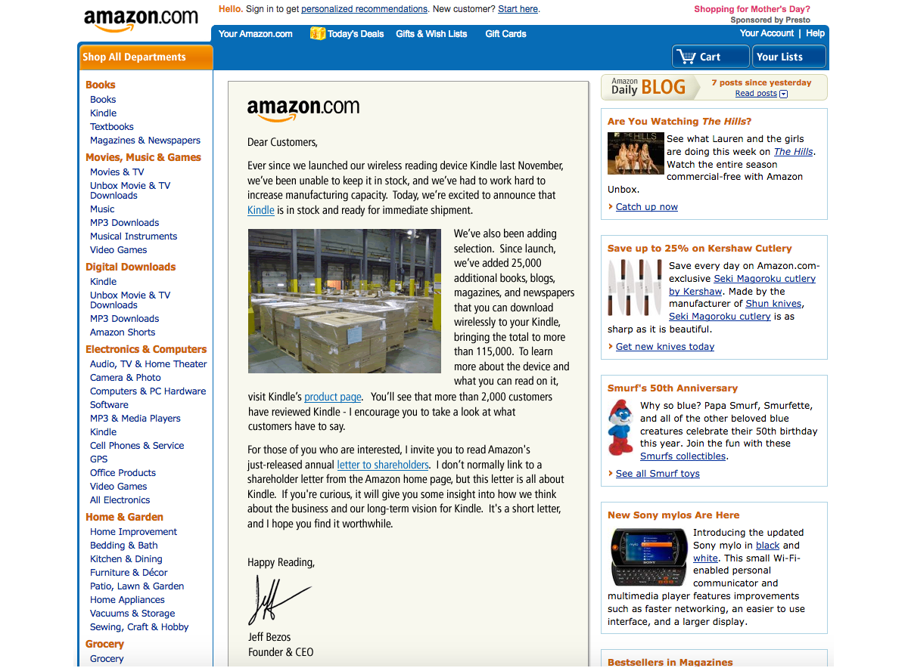
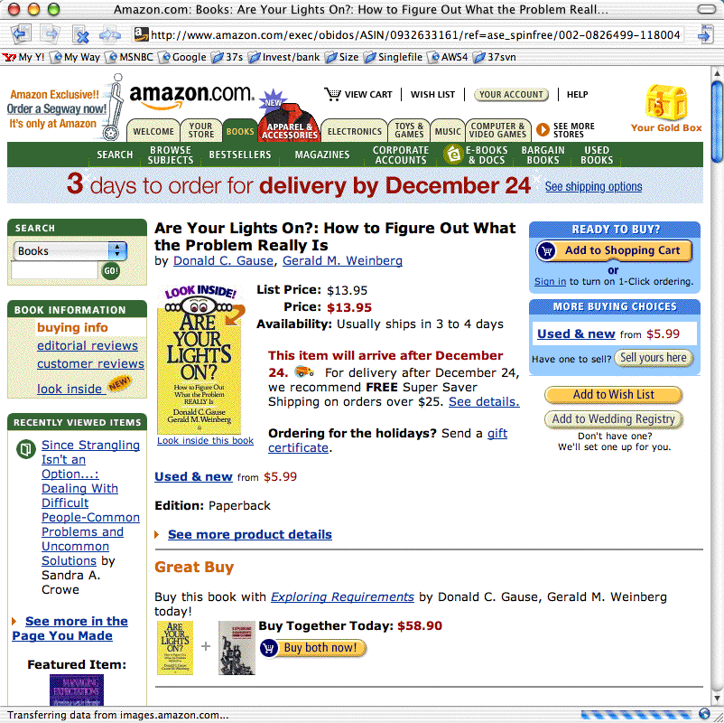

Andrii Zhdan
If I Was Starting My Career Today: Thoughts After 15 Years Spent In UX Design (Part 1)
19 min read
About The Author:
In this two-part series, Andrii Zhdan outlines common challenges faced at the start of a design career and offers advice to smooth your journey based on insights from his experience hiring designers. Learn why mastering design tools is crucial, how to build a strong portfolio, and tips for acing your first interviews.
My design career began in 2008. The first book that I read on the topic of design was Photoshop Tips And Tricks by Scott Kelby, which was a book about a very popular design tool, but not about user experience (UX) design itself. Back at the time, I didn’t know many of the approaches and techniques that even junior designers know today because they weren’t invented yet, and also because I was just beginning my learning journey and finding my way in UX design. But now I have diverse experience; I’m myself hiring designers for my team, and I know much more.
“If you want to go somewhere, it is best to find someone who has already been there.”
— Robert Kiyosaki
The two-part series contains four sections, each roughly covering one key stage in your beginner career:
- Master Your Design Tools
- Work on Your Portfolio
- Preparing for Your First Interviews: Getting a First Job
- In Your New Junior UX Job: On the Way to Grow
I’ll cover the first three topics in this first article and the fourth one in the second article. In addition, I will include very detailed Further Reading sections at the end of each part.
When you’re about to start learning, every day, you will receive new pieces of evidence of how many things you don’t know yet. You will see people who have been doing this for years and you will doubt whether you can do this, too. But there is a nuance I want to highlight: first, take a look at the following screenshot:

This is the Amazon website in 2008 when I was about to start my design career and received my first paycheck as a beginner designer. And this is how Amazon looked like even earlier, in 2002:

Getting Started: Master Your Design Tools
In 2002, Amazon made 3.93 billion US dollars in profits. I dare say they could have hired the very best designers at the time. So today, when you speak to a designer with twenty years of experience and think, “Oh, this designer must be on a very high level now, a true master of his craft,” remind yourself about the state of UX design that existed when the designer’s career was about to start, sometime in the early 2000s!
A lot of the knowledge that I have learned and that is over five years old is outdated now, and the learning complexity only increases every year.
When I was just beginning to learn, most of us did our design work in Adobe Photoshop.
In Photoshop, there were no components, styles, design libraries, auto layouts, and so on. Every screen was in another PSD file, and even making rounded corners on a rectangle object was a difficult task. Files were “heavy,” and sometimes I needed to wait thirty or more seconds to open a file and check what screen was inside while changing a button’s name or label in twenty separate PSD files (each containing only one design screen, remember?) could take up to an hour, depending on the power of your computer.
There were many digital design tools at the time, including Fireworks — which some professionals considered superior to Photoshop, and for quite a few reasons — but this is not the main point of my story. One way or another, Photoshop back then became very popular among designers and we all absolutely had to have it in our toolset, no matter what other tools we also needed and used.
Now computers are much faster, and our design tools have evolved quite a bit, too. For example, I can apply multiple changes to multiple design screens in just a few seconds by using Figma components and a proper structure of the design file, I can design/prototype responsive designs by using auto-layout, and more.
In one word, knowing your design tool can be a real “superpower” for junior UX designers — a power that beginners often ignore. When you know your tool inside-out, you’ll spend less time on the design routine and you’ll have more time for learning new things.
Master your tool(s) of choice (be it Figma Design or Illustrator, Sketch, Affinity Designer, Canva, Framer, and so on) in the most efficient way, and free up to a couple of extra hours every day for reading, doing tutorials, or taking longer breaks.
Learn all the key features and options, and discover and remember the most important hotkeys so you’ll be working without the need to constantly reach for your mouse and navigate the “web” of menus and sub-menus. It’s no secret that we, designers, mostly learn through doing practical tasks. So, imagine how much time it would save you within a few years of your career!
Also, it’s your chance: developers are rolling out new features for beginner designers and pro designers simultaneously, but junior designers usually have more time to learn those updates! So, be faster and get your advantage!
Getting Started: Work On Your Portfolio
You need to admit it: your portfolio (or, to put it more precisely, the lack of it) will be the main pain point at the start.
You may hear sometimes statements such as: “We understand that being a junior designer is not about having a portfolio…” But the fact is that we all would like to see some results of your work, even if it is your very early work on a few design projects or concepts. Remember, if you have something to show, this would always be a considerable advantage!
I have heard from some juniors that they don’t want to invest time in their portfolio because this work is not payable and it’s time-consuming. But sitting and waiting and getting rejected again and again is also time-consuming. And spending a few of your first career years in the wrong company is also time-consuming (and disappointing, too). So my advice is to spend some time in advance on showcasing your work and then get much better results in the near future.
In case you need some extra motivation, here is a quote from Muhammad Ali, regarded as one of the most significant sports figures of the 20th century:
“I hated every minute of training, but I said to myself, ‘Do not quit. Suffer now and live the rest of your life as a champion.’”
— Muhammad Ali
Ready to fire but have no idea where to start? Here are a few options:
Find a popular product with a rather difficult-to-use or not very elegant interface and research what the users of this product are complaining about the most. Then, as an exercise, design a few interface screens for this product, with their core features explained, publish them on social media, and tag that company. (This approach may not always work, but it’s worth a try.)
Sign up for and actively participate in hackathons. As a result, it’s possible that you may get not just a few screens redesigned in Figma but a real working product you can show (and be proud of). Also, you can meet nice people there who may recommend you if you apply for a job at one of the companies they work for.
Complete UXchallenge challenges and present how you solved them on LinkedIn.
Note: You’re not limited to LinkedIn, of course; you can also use Instagram, Facebook, Behance, Dribbble, and so on. But keep in mind that many recruiters prefer LinkedIn.
Pick up a website that you use often and check whether it meets the “Ten Usability Heuristics for User Interface Design.” Create a detailed report that lists everything that can be (re)designed better. Publish the report on LinkedIn and also send it to the company that made this website. Don’t forget to tell them why you did that report for their website specifically and that you’re learning UX design, practicing, and actively looking for a job.
Visit some popular developer conferences where you would be one of the only designers attending. Talk to people and propose your help for their startups. Who knows, you may become the co-creator of some future cool startup!
Don’t wait until someone hands you your chance on a “silver platter.” There are many projects that need the designer’s hands and help but can’t get such help yet. Assist them and then show the results of your work in your first portfolio. It gives you a huge advantage over other candidates who haven’t worked on their portfolios yet!